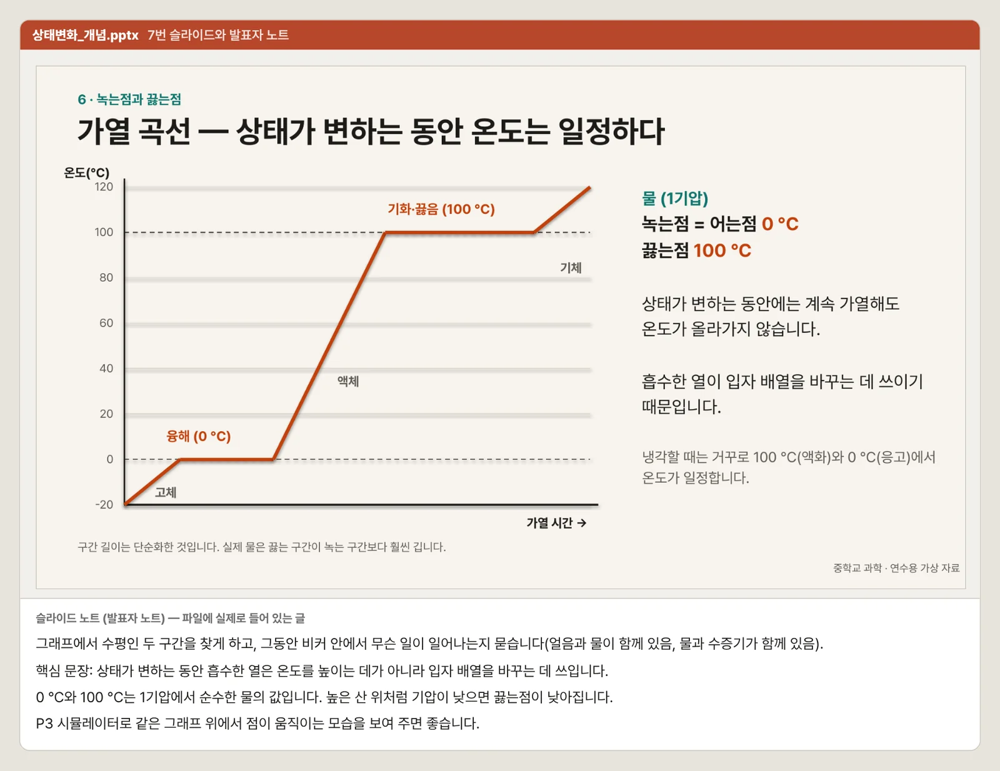

수업 PPT
P1 계획표를 바탕으로 «물질의 상태 변화» 개념 슬라이드 8장을 코워크로 만듭니다. 슬라이드마다 학생 질문과 오개념을 담은 발표자 노트를 붙입니다.
- 목표
- 세 가지 상태부터 가열 곡선·질량까지 개념 슬라이드 8장과 발표자 노트를 만든다 (예시: 중학교 과학 — 물질의 상태 변화, P1 계획표의 2~7차시에 나누어 씀)
- 준비물
- P1에서 만든
물질의상태변화폴더 (없으면 예시 폴더 zip) - 결과물
01_수업PPT/상태변화_개념.pptx(8장, 발표자 노트) + 같은 내용의 PDF- 주의
- 인터넷 이미지·교과서 그림 넣지 않기 · 과학 용어와 수치는 교사가 마지막으로 확인
PPT 만들기는 2차시에서 해 보았습니다. 이번에는 같은 단원의 다른 자료(시뮬레이터·게임·영상)와 용어와 색이 맞아야 합니다. 그래서 핵심은 둘입니다. 구성안을 먼저 받아 8장의 흐름을 확인하는 것, 그리고 과학 조건을 문장으로 적어 두는 것입니다(승화는 방향을 함께, «1기압», 입자 크기는 그대로, 열 흡수는 빨강·방출은 파랑). 여기서 정한 용어와 색을 P3~P6에서도 그대로 씁니다.
먼저 볼 영상

1 준비
- P1에서 만든
클로드연수/단원프로젝트/물질의상태변화폴더에00_단원계획/단원계획표.xlsx와01_수업PPT폴더가 있는지 봅니다. P1을 건너뛰었다면 예시 폴더 zip 을단원프로젝트안에 풉니다. - 만든 파일을 열어 볼 PowerPoint가 있는지 확인합니다. 없는 PC에서는 함께 만드는 PDF로 확인합니다.
2 따라 하기
번호 순서대로 진행합니다. 프롬프트가 필요한 단계에는 바로 아래에 복사 단추가 있습니다.
- 클로드 데스크톱 앱에서 새 대화를 엽니다.
새 화면 메시지 상자에 바로 요청합니다. 예전 화면 메시지 상자에서 Cowork 를 먼저 고릅니다. - 메시지 상자의 폴더 연결 단추로
클로드연수/단원프로젝트/물질의상태변화를 연결하고, 권한 설정을 Manual 로 둡니다. - 구성안을 먼저 받습니다.
연결한 폴더의 00_단원계획/단원계획표.xlsx 를 열어 보고, 이 단원의 개념 슬라이드 8장 구성안만 먼저 표로 보여 주세요. 아직 파일을 만들지 마세요. 표의 열: 번호 | 제목 | 화면에 넣을 내용(3줄 이내) | 그림·도식 | 발표자 노트 요지 - 1장 표지, 8장은 정리와 확인 질문 2개 - 꼭 넣을 내용: 세 가지 상태(모양·부피), 입자의 배열과 운동, 상태 변화 6가지, 생활 속 예, 열의 흡수·방출, 가열 곡선, 질량과 부피 - 승화는 «승화(고체→기체)», «승화(기체→고체)»처럼 언제나 방향을 함께 적기 - 물의 녹는점·끓는점은 «1기압에서 0 °C·100 °C»로 - 입자 그림은 상태가 바뀌어도 입자의 크기와 개수가 같게 - 물은 얼음일 때 부피가 더 큰 예외라는 점을 한 곳에 밝히기 - 발표자 노트에는 학생에게 던질 질문과 자주 나오는 오개념을 넣기
«계획표를 열어 보고»로 시작하면 P1에서 정한 차시·활동과 슬라이드가 이어집니다. 과학 조건(방향·1기압·입자 크기·물의 예외)은 구성안 단계에서 적어야 합니다. 다 만든 뒤에 고치면 여러 장을 다시 손봐야 합니다.
캡처 넣을 곳 · P2-1
슬라이드 구성안 (따라 하기 3번).- 구성안 표 전체가 보이게
- 빨간 상자: 승화에 방향이 적힌 칸
- 구성안을 읽고 고칠 점은 말로 고칩니다. 예: «5장 생활 속 예에 우리 학교에서 하는 양초 녹이기 실험을 넣어 주세요», «3장 그림은 상자 세 개로 나란히»
- 만들기를 맡깁니다. 파일을 만들기 전에 허락을 구하면 승인합니다.
구성안대로 01_수업PPT/상태변화_개념.pptx 를 만들어 주세요. - 16:9, 글꼴은 맑은 고딕, 제목 32pt 이상·본문 18pt 이상 (교실 TV 뒷자리에서 읽히게) - 그림과 도식은 인터넷 이미지를 쓰지 말고 도형으로 직접 그리기 (입자는 모두 같은 크기의 원) - 열 흡수는 빨강, 열 방출은 파랑으로 통일하고, 색만으로 구별하지 않게 글자도 함께 - 슬라이드마다 발표자 노트를 3~5문장으로 - 같은 내용을 PDF로도 저장 (상태변화_개념.pdf). PDF를 만들 수 없으면 그렇다고 알려 주기 다 만들면 슬라이드마다 제목과 노트 첫 문장을 표로 보여 주세요.
«색만으로 구별하지 않게 글자도 함께»는 색약 학생과 흑백 인쇄를 위한 조건입니다. PDF는 PowerPoint가 없는 학생 기기에서 열기 위해 만듭니다. P6 허브 페이지에서는 이 PDF를 잇습니다. 학교 누리집에 올리거나 많이 인쇄해 나눠 줄 계획이면 글꼴을 사용 조건이 공개된 무료 글꼴(Pretendard·나눔고딕·학교안심 글꼴 등)로 바꿔 달라고 합니다(안전하게 쓰기 5번).
- PowerPoint로
상태변화_개념.pptx를 열어 슬라이드를 넘겨 보고, 화면 아래 노트 칸에 발표자 노트가 들어 있는지 봅니다.캡처 넣을 곳 · P2-2
PowerPoint에서 연 결과 (따라 하기 6번).- 빨간 상자: 화면 아래 노트 칸
- 가열 곡선 슬라이드가 보이면 좋음
- 마지막으로 검수를 맡깁니다.
상태변화_개념.pptx 를 처음부터 끝까지 검수해 주세요. 1. 상태 변화 이름과 방향, 열 흡수·방출이 모든 슬라이드에서 서로 맞는지 2. 가열 곡선에서 온도가 일정한 구간이 0 °C·100 °C 에 있고 «1기압»이 적혀 있는지 3. «가열하면 입자가 커진다», «수증기가 하얗게 보인다»처럼 오개념을 부르는 글이나 그림이 없는지 4. 글자가 상자 밖으로 넘치거나 서로 겹친 슬라이드가 없는지 5. 발표자 노트가 8장 모두에 있는지 틀린 곳은 파일에서 고치고, 고친 내용을 한 줄씩 알려 주세요.
검수가 끝나면 엑셀의
단원계획표.xlsx에서 이 슬라이드를 쓰는 차시의 «준비 상태»를 바꿔 둡니다. 계획표가 프로젝트 진행표가 됩니다.
3 결과 예시


4 검증 포인트
② 승화의 방향 — «승화»만 쓰인 곳 없이 «고체→기체», «기체→고체»가 함께 적혔는지 봅니다. 교과서에 따라 두 방향을 모두 승화라고 하거나 나누어 부르기도 하므로 방향을 적어 두면 어느 쪽과도 어긋나지 않습니다.
③ 열 출입 — 흡수(융해·기화·고체→기체 승화), 방출(응고·액화·기체→고체 승화)이 글과 색에서 모두 맞는지 봅니다.
④ 가열 곡선 — 수평 구간이 0 °C·100 °C에 있고 «1기압»이 적혀 있는지, 상태가 변하는 동안 온도가 일정하다는 설명이 있는지 봅니다.
⑤ 입자 그림 — 고체·액체·기체에서 입자의 크기와 개수가 같은지, 기체에서 입자가 커지게 그리지 않았는지 봅니다.
⑥ 오개념 문장 — «수증기가 하얗게 보인다», «컵에서 물이 새어 나왔다» 같은 문장이 없는지 봅니다. 주전자 입구의 하얀 김은 작은 물방울(액화)입니다.
⑦ 발표자 노트 — 8장 모두에 노트가 있고, 학생 질문이 들어 있는지 봅니다.
⑧ 교실 화면 — 교실 TV에 띄워 뒷자리에서 글자가 읽히는지 봅니다.
5 다른 단원에 적용하기
따라 하기 3단계 프롬프트 1 대신 아래 교과 단원 프롬프트를 씁니다. 5단계와 7단계는 아래 공통 프롬프트로 바꿔 씁니다(파일 이름의 «단원이름»만 고칩니다). 숫자·연도·인용이 들어가는 단원은 교사가 확인한 자료 파일을 폴더에 함께 넣어 줍니다.
구성안대로 01_수업PPT 폴더에 «단원이름_개념.pptx» 를 만들어 주세요. - 16:9, 글꼴은 맑은 고딕, 제목 32pt 이상·본문 18pt 이상 (교실 TV 뒷자리에서 읽히게) - 그림과 도식은 인터넷 이미지를 쓰지 말고 도형으로 직접 그리기 - 색은 두세 가지로 정해 같은 뜻에는 같은 색을 쓰고, 색만으로 구별하지 않게 글자도 함께 - 슬라이드마다 발표자 노트를 3~5문장으로 - 같은 내용을 PDF로도 저장. PDF를 만들 수 없으면 그렇다고 알려 주기 다 만들면 슬라이드마다 제목과 노트 첫 문장을 표로 보여 주세요.
만든 pptx 를 처음부터 끝까지 검수해 주세요. 1. 교과 용어가 교과서와 다른 곳이 있는지 2. 숫자·연도·인용이 첨부 자료나 계획표와 다른 곳이 있는지 3. 학생이 오해할 만한 글이나 그림이 있는지 4. 글자가 상자 밖으로 넘치거나 서로 겹친 슬라이드가 있는지 5. 발표자 노트가 8장 모두에 있는지 틀린 곳은 파일에서 고치고, 고친 내용을 한 줄씩 알려 주세요.
국어비유와 상징직유는 «~처럼, ~같이» 같은 연결하는 말이 있고 은유는 없다는 차이를 예문으로
연결한 폴더의 00_단원계획/단원계획표.xlsx 를 열어 보고, 중학교 국어 '비유와 상징' 단원의 개념 슬라이드 8장 구성안만 먼저 표로 보여 주세요. 아직 파일을 만들지 마세요. 표의 열: 번호 | 제목 | 화면에 넣을 내용(3줄 이내) | 그림·도식 | 발표자 노트 요지 - 1장 표지, 8장은 정리와 확인 질문 2개 - 꼭 넣을 내용: 직유·은유·의인·상징의 뜻과 효과, 시에서 비유와 상징을 찾아 의미 해석하기, 비유를 써서 짧은 시 쓰기 - 직유는 «~처럼, ~같이» 같은 연결하는 말이 있고 은유는 없다는 차이를 예문으로 - 상징은 원관념이 드러나지 않는다는 점을 비유와 비교해 - 시는 교사가 첨부한 작품(교사가 쓴 시나 저작권이 끝난 작품)만 쓰고, 다른 작품을 지어내거나 인용하지 않기 - 발표자 노트에는 학생에게 던질 질문과 자주 나오는 오개념을 넣기
수학일차함수와 그래프기울기 = (y의 값의 증가량) ÷ (x의 값의 증가량)을 그래프 위 직각삼각형으로
연결한 폴더의 00_단원계획/단원계획표.xlsx 를 열어 보고, 중학교 수학 '일차함수와 그래프' 단원의 개념 슬라이드 8장 구성안만 먼저 표로 보여 주세요. 아직 파일을 만들지 마세요. 표의 열: 번호 | 제목 | 화면에 넣을 내용(3줄 이내) | 그림·도식 | 발표자 노트 요지 - 1장 표지, 8장은 정리와 확인 질문 2개 - 꼭 넣을 내용: 일차함수 y = ax + b 의 뜻, 그래프 그리기, x절편과 y절편, 기울기의 뜻과 그래프의 모양, 일차함수를 활용한 문제 해결 - 기울기 = (y의 값의 증가량) ÷ (x의 값의 증가량)을 그래프 위 직각삼각형으로 - a > 0, a < 0 일 때 그래프 모양 비교 - 식과 그래프 표기는 교과서처럼 쓰기 (예: y = 2x − 1), 계산값은 스스로 검산하기 - 발표자 노트에는 학생에게 던질 질문과 자주 나오는 오개념을 넣기
영어과거 시제로 경험 말하기규칙 동사 -ed 붙이는 규칙(예: like → liked, study → studied)
연결한 폴더의 00_단원계획/단원계획표.xlsx 를 열어 보고, 중학교 영어 '과거 시제로 경험 말하기' 단원의 개념 슬라이드 8장 구성안만 먼저 표로 보여 주세요. 아직 파일을 만들지 마세요. 표의 열: 번호 | 제목 | 화면에 넣을 내용(3줄 이내) | 그림·도식 | 발표자 노트 요지 - 1장 표지, 8장은 정리와 확인 질문 2개 - 꼭 넣을 내용: 규칙 동사의 과거형(-ed)과 불규칙 동사, 과거 시제 의문문과 부정문 (did, didn't), 지난 주말 경험을 말하고 쓰기 - 규칙 동사 -ed 붙이는 규칙(예: like → liked, study → studied) - 불규칙 동사는 동사표로 묶어 익히기 - 예문은 교사가 첨부한 예문.txt 와 교과서 수준 어휘로, 불규칙 동사는 첨부한 동사표.csv 기준으로 - 발표자 노트에는 학생에게 던질 질문과 자주 나오는 오개념을 넣기
과학기체의 압력·온도와 부피압력은 기체 입자가 벽에 부딪쳐 생긴다는 입자 그림
연결한 폴더의 00_단원계획/단원계획표.xlsx 를 열어 보고, 중학교 과학 '기체의 압력·온도와 부피' 단원의 개념 슬라이드 8장 구성안만 먼저 표로 보여 주세요. 아직 파일을 만들지 마세요. 표의 열: 번호 | 제목 | 화면에 넣을 내용(3줄 이내) | 그림·도식 | 발표자 노트 요지 - 1장 표지, 8장은 정리와 확인 질문 2개 - 꼭 넣을 내용: 기체 입자의 운동과 압력, 압력과 부피의 관계 (보일 법칙, 온도 일정), 온도와 부피의 관계 (샤를 법칙, 압력 일정), 생활 속 예 - 압력은 기체 입자가 벽에 부딪쳐 생긴다는 입자 그림 - 두 법칙의 조건과 그래프 모양 비교 - 법칙에는 «온도 일정», «압력 일정» 조건을 언제나 함께 적기 - 발표자 노트에는 학생에게 던질 질문과 자주 나오는 오개념을 넣기
사회기후와 생활기후 그래프(막대: 강수량, 선: 기온) 읽는 순서
연결한 폴더의 00_단원계획/단원계획표.xlsx 를 열어 보고, 중학교 사회 '기후와 생활' 단원의 개념 슬라이드 8장 구성안만 먼저 표로 보여 주세요. 아직 파일을 만들지 마세요. 표의 열: 번호 | 제목 | 화면에 넣을 내용(3줄 이내) | 그림·도식 | 발표자 노트 요지 - 1장 표지, 8장은 정리와 확인 질문 2개 - 꼭 넣을 내용: 기온과 강수량으로 본 기후 구분, 열대·건조·온대·냉대·한대 기후 지역의 생활, 기후 그래프 읽기 - 기후 그래프(막대: 강수량, 선: 기온) 읽는 순서 - 기후마다 집·옷·음식의 예를 사진 대신 그림 도식으로 - 기온·강수량 숫자는 교사가 첨부한 기후자료.csv 만 쓰고 지어내지 않기, 출처를 함께 적기 - 발표자 노트에는 학생에게 던질 질문과 자주 나오는 오개념을 넣기
역사조선의 건국과 발전사건은 연표(시간 순서)로 먼저 보여 주기
연결한 폴더의 00_단원계획/단원계획표.xlsx 를 열어 보고, 중학교 역사 '조선의 건국과 발전' 단원의 개념 슬라이드 8장 구성안만 먼저 표로 보여 주세요. 아직 파일을 만들지 마세요. 표의 열: 번호 | 제목 | 화면에 넣을 내용(3줄 이내) | 그림·도식 | 발표자 노트 요지 - 1장 표지, 8장은 정리와 확인 질문 2개 - 꼭 넣을 내용: 조선의 건국 과정, 통치 체제의 정비, 세종 대의 문화 발전, 사림의 성장 - 사건은 연표(시간 순서)로 먼저 보여 주기 - 인물 사진 대신 연표와 도식 - 연도·인물·사건은 교사가 첨부한 연표.csv 와 교과서 기준으로만 쓰고, 없는 사실을 지어내지 않기 - 발표자 노트에는 학생에게 던질 질문과 자주 나오는 오개념을 넣기
도덕갈등의 평화적 해결너-전달법과 나-전달법 문장을 나란히 비교
연결한 폴더의 00_단원계획/단원계획표.xlsx 를 열어 보고, 중학교 도덕 '갈등의 평화적 해결' 단원의 개념 슬라이드 8장 구성안만 먼저 표로 보여 주세요. 아직 파일을 만들지 마세요. 표의 열: 번호 | 제목 | 화면에 넣을 내용(3줄 이내) | 그림·도식 | 발표자 노트 요지 - 1장 표지, 8장은 정리와 확인 질문 2개 - 꼭 넣을 내용: 갈등이 생기는 까닭, 평화적 해결 방법 (대화·협상·조정), 공감하며 듣기와 나-전달법, 학급 갈등 사례 토의 - 너-전달법과 나-전달법 문장을 나란히 비교 - 정답을 강요하지 않고 생각할 질문으로 끝내기 - 사례는 교사가 쓴 가상 사례만 쓰고, 실제 학생·학교를 떠올리게 하는 이름이나 설정을 넣지 않기 - 발표자 노트에는 학생에게 던질 질문과 자주 나오는 오개념을 넣기
기술·가정청소년의 영양과 식사영양소마다 하는 일과 많이 든 식품을 표로
연결한 폴더의 00_단원계획/단원계획표.xlsx 를 열어 보고, 중학교 기술·가정 '청소년의 영양과 식사' 단원의 개념 슬라이드 8장 구성안만 먼저 표로 보여 주세요. 아직 파일을 만들지 마세요. 표의 열: 번호 | 제목 | 화면에 넣을 내용(3줄 이내) | 그림·도식 | 발표자 노트 요지 - 1장 표지, 8장은 정리와 확인 질문 2개 - 꼭 넣을 내용: 5대 영양소의 기능과 급원 식품, 청소년기의 영양 섭취, 식품 구성 자전거로 식사 살펴보기, 균형 잡힌 식단 짜기 - 영양소마다 하는 일과 많이 든 식품을 표로 - 식품군별로 음식 예를 그림 도식으로 - 영양 수치는 교사가 첨부한 자료만 쓰고 출처를 밝히기, 의학적 조언처럼 쓰지 않기 - 발표자 노트에는 학생에게 던질 질문과 자주 나오는 오개념을 넣기
정보정렬 알고리즘카드 5장으로 정렬 과정을 한 단계씩 그림으로
연결한 폴더의 00_단원계획/단원계획표.xlsx 를 열어 보고, 중학교 정보 '정렬 알고리즘' 단원의 개념 슬라이드 8장 구성안만 먼저 표로 보여 주세요. 아직 파일을 만들지 마세요. 표의 열: 번호 | 제목 | 화면에 넣을 내용(3줄 이내) | 그림·도식 | 발표자 노트 요지 - 1장 표지, 8장은 정리와 확인 질문 2개 - 꼭 넣을 내용: 알고리즘의 뜻과 조건, 선택 정렬과 버블 정렬의 과정, 비교 횟수로 효율 비교하기, 정렬을 코드로 나타내기 - 카드 5장으로 정렬 과정을 한 단계씩 그림으로 - 선택 정렬은 카드 n장일 때 비교 n(n−1)/2 번 - 알고리즘 이름과 과정은 교과서 용어로, 비교 횟수는 직접 세어 검산하기 - 발표자 노트에는 학생에게 던질 질문과 자주 나오는 오개념을 넣기
음악우리 음악의 장단장단표의 박과 구음을 표로
연결한 폴더의 00_단원계획/단원계획표.xlsx 를 열어 보고, 중학교 음악 '우리 음악의 장단' 단원의 개념 슬라이드 8장 구성안만 먼저 표로 보여 주세요. 아직 파일을 만들지 마세요. 표의 열: 번호 | 제목 | 화면에 넣을 내용(3줄 이내) | 그림·도식 | 발표자 노트 요지 - 1장 표지, 8장은 정리와 확인 질문 2개 - 꼭 넣을 내용: 장단의 뜻, 여러 장단의 빠르기와 느낌, 장구로 장단 치기, 민요에 장단 맞추기 - 장단표의 박과 구음을 표로 - 같은 노래를 다른 장단으로 부르는 활동 안내 - 장단 이름·박·장구 구음은 교사가 첨부한 장단표.txt 만 쓰고 지어내지 않기, 음원은 넣지 않기 - 발표자 노트에는 학생에게 던질 질문과 자주 나오는 오개념을 넣기
미술색의 3요소와 배색같은 색상에서 명도·채도만 바꾼 색 띠
연결한 폴더의 00_단원계획/단원계획표.xlsx 를 열어 보고, 중학교 미술 '색의 3요소와 배색' 단원의 개념 슬라이드 8장 구성안만 먼저 표로 보여 주세요. 아직 파일을 만들지 마세요. 표의 열: 번호 | 제목 | 화면에 넣을 내용(3줄 이내) | 그림·도식 | 발표자 노트 요지 - 1장 표지, 8장은 정리와 확인 질문 2개 - 꼭 넣을 내용: 색상·명도·채도, 색상환과 보색·유사색, 배색이 주는 느낌, 배색으로 포스터 꾸미기 - 같은 색상에서 명도·채도만 바꾼 색 띠 - 보색 대비와 유사색 배색 예 - 화면의 색과 물감 색이 다를 수 있다고 밝히기, 다른 사람의 작품 이미지는 넣지 않기 - 발표자 노트에는 학생에게 던질 질문과 자주 나오는 오개념을 넣기
체육건강 체력과 운동 강도건강 체력 요소마다 운동 예
연결한 폴더의 00_단원계획/단원계획표.xlsx 를 열어 보고, 중학교 체육 '건강 체력과 운동 강도' 단원의 개념 슬라이드 8장 구성안만 먼저 표로 보여 주세요. 아직 파일을 만들지 마세요. 표의 열: 번호 | 제목 | 화면에 넣을 내용(3줄 이내) | 그림·도식 | 발표자 노트 요지 - 1장 표지, 8장은 정리와 확인 질문 2개 - 꼭 넣을 내용: 건강 체력 요소 (심폐지구력·근력·근지구력·유연성·신체 구성), 운동 강도와 심박수, 나에게 맞는 운동 계획 세우기 - 건강 체력 요소마다 운동 예 - 목표 심박수 계산 예 (카르보넨 공식) - 심박수 공식과 출처를 밝히고, 의학적 판단이 아니라고 적기, 학생 측정 기록은 넣지 않기 - 발표자 노트에는 학생에게 던질 질문과 자주 나오는 오개념을 넣기
진로직업 세계 탐색직업 정보를 찾는 순서
연결한 폴더의 00_단원계획/단원계획표.xlsx 를 열어 보고, 중학교 진로 '직업 세계 탐색' 단원의 개념 슬라이드 8장 구성안만 먼저 표로 보여 주세요. 아직 파일을 만들지 마세요. 표의 열: 번호 | 제목 | 화면에 넣을 내용(3줄 이내) | 그림·도식 | 발표자 노트 요지 - 1장 표지, 8장은 정리와 확인 질문 2개 - 꼭 넣을 내용: 직업의 의미, 직업의 종류와 변화, 관심 직업 정보 찾기, 진로 포트폴리오 정리 - 직업 정보를 찾는 순서 - 직업 카드 비교표 - 직업 정보(하는 일·준비 과정)는 교사가 확인한 직업카드.csv 만 쓰고 출처를 밝히기, 임금·전망 숫자는 넣지 않기 - 발표자 노트에는 학생에게 던질 질문과 자주 나오는 오개념을 넣기
한문한자의 짜임짜임마다 한자 예 두세 개를 그림 도식으로
연결한 폴더의 00_단원계획/단원계획표.xlsx 를 열어 보고, 중학교 한문 '한자의 짜임' 단원의 개념 슬라이드 8장 구성안만 먼저 표로 보여 주세요. 아직 파일을 만들지 마세요. 표의 열: 번호 | 제목 | 화면에 넣을 내용(3줄 이내) | 그림·도식 | 발표자 노트 요지 - 1장 표지, 8장은 정리와 확인 질문 2개 - 꼭 넣을 내용: 상형·지사·회의·형성의 뜻, 부수와 한자의 짜임, 형성자의 뜻 부분과 음 부분 - 짜임마다 한자 예 두세 개를 그림 도식으로 - 형성자의 뜻 부분과 음 부분을 색으로 나누어 - 한자 예와 풀이는 교사가 첨부한 한자목록.csv 만 쓰고 지어내지 않기 - 발표자 노트에는 학생에게 던질 질문과 자주 나오는 오개념을 넣기
슬라이드는 단원 자료의 기준 문서가 됩니다. 구성안을 먼저 보고, 교과 조건을 문장으로 적고, 발표자 노트에 질문과 오개념을 담게 합니다. 여기서 정한 용어(승화의 방향)와 색(흡수 빨강·방출 파랑)을 시뮬레이터·게임·영상에서도 그대로 쓰면, 학생이 자료를 옮겨 다녀도 헷갈리지 않습니다.
· PDF가 만들어지지 않았다 — PowerPoint에서 «다른 이름으로 저장»이나 «내보내기»로 PDF를 고릅니다. 메뉴 이름은 화면 문구를 따릅니다.
· 글자가 상자 밖으로 넘친다 — 슬라이드 번호를 짚어 «7장 오른쪽 글이 넘쳐요. 글을 줄이거나 상자를 키워 주세요»라고 요청합니다.
· 입자 그림이 이상하다 — 해당 슬라이드를 캡처해 붙이고 «기체 입자가 고체 입자보다 크게 그려졌어요. 모두 같은 크기로»처럼 짚어 줍니다.
· 노트가 보이지 않는다 — PowerPoint 화면 아래 노트 칸을 위로 끌어 올리거나, 보기 메뉴에서 노트를 켭니다.
· 다른 PC에서 글꼴이 바뀐다 — 학교 PC에 기본으로 있는 맑은 고딕을 쓰게 합니다. 다른 글꼴을 쓰면 없는 PC에서 다른 글꼴로 바뀝니다.
더 보기

출처: Claude 도움말 Get started with Claude Cowork (데스크톱에서 내 컴퓨터 파일 읽고 쓰기, PowerPoint 발표자료) · Create and edit files with Claude (만들 수 있는 파일: xlsx·pptx·docx·PDF) (2026-11-11 확인)